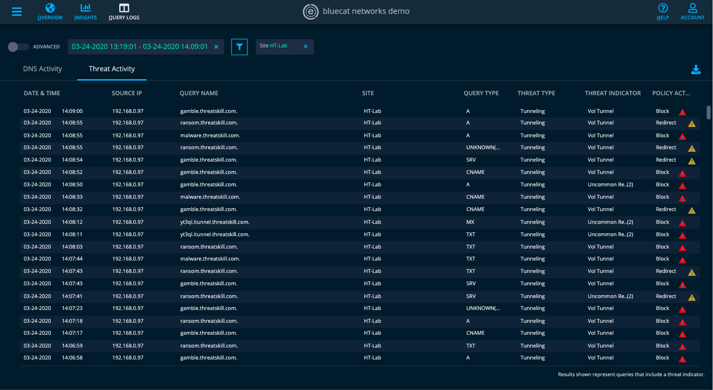

user experience + interaction design
003. visualizing malicious traffic on the Edge Map
overview
Implementing visiblity towards search efficiency and malicious traffic on a network in a visual and dynamic flow.
customer problem
If suspicious query traffic occured on one or more of a network's sites, there is no immediate visual to indicate an issue for the Security team to look into.
goal
By aggregating the problematic queries to be site specific, security analysts can track the behaviour of the policy actions at that site in case the site is under attack.
result
Currently receiving feedback on the concept, and will begin production once approved.
Part 1
The source IP in the Edge Customer Intelligence panel can tell the security team if they have 1+ machines compromised. By aggregating it to be Site specific, it can immediately signal a Security team if they have a site under attack.
Defining the problem
The purpose of this feature
With large enterprise customers, this is to give them a heads up of a large number of problematic queries at the Site level. This concept will help visualize and track behaviour of the policy actions at that site.
Version #1
Understanding the customer's perspective
As organizations have increasingly complex networks and have to watch multiple systems to monitor traffic on their network to identify malicious activity or issues in their infrastructure, network and security professionals need a way to get visually alerted to certain patterns or issues in their traffic.
As a security analyst, they want to be able to have an immediate visual on the Edge Dashboard to signal an issue on the sites in their network.
The first iteration
In my mockup to showcase malicious traffic, I added red to sites with malicious traffic to symbolize the problematic queries occuring at that location. By also including a separate category for threat activity in the site cards, I ensured that there are API's available in BlueCat's code to collect that data. The dots beside each site name shows which one has the issues, making it easier for the user to view.
Version #2
The addition of the See Statistics and See More buttons provide supplementary information regarding the site's queries. See Statistics collects the data of policy actions at that site and visualizes it in a graph form in the statistics panel below. See more leads to the Threat Activity section of the Query Logs page with that site filtered already (see below).
Currently on the Edge statistics graphs, the user is able to click and drag a specific timeframe that they wish to view and that will lead them to the DNS Activity section of the Query Logs page. By activating the policy actions statistics of a particular site, I mimicked the same concept to allow the user to do the same thing, In doing so, it leads the user to the Threat Activity section of the Query Logs page with that site and timeframe filtered (see below).
Site Filter

Site and Timeframe Filter
Icon Accessibility